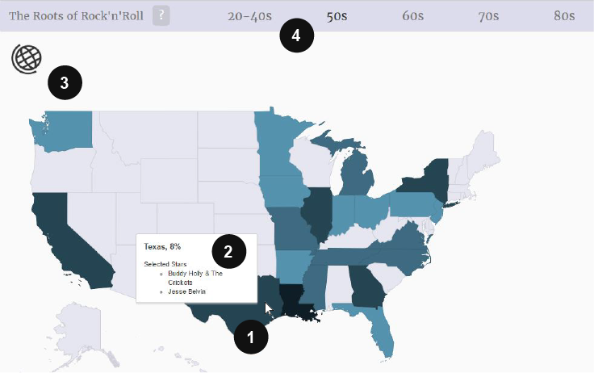

The Rock'n'Roll map is a heatmap visualization showing the most popular geographic areas for Rock'n'Roll artists over seven decades. The visualization is based on a dataset of 200 most popular rock artists globally.
This is how it works

- Bring your mouse on the colored areas to see more information on the area. If you're on the world view, zoom in by clicking the colored areas.
- The info box shows the area name, popularity and artist highlights. The popularity value indicates how many artists out of all the artists on that zoom level are from the selected area.
- Zoom out back to the world map view by clicking the globe icon.
- Click the decades on the timeline to change the time period.